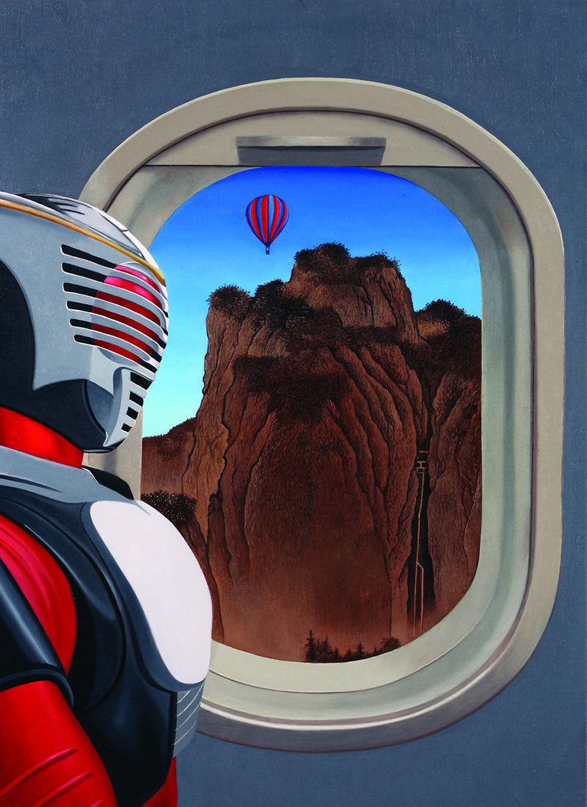
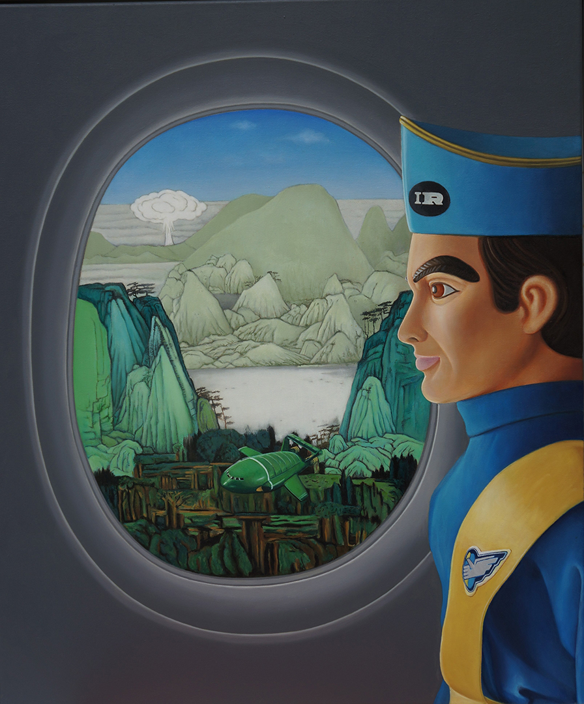
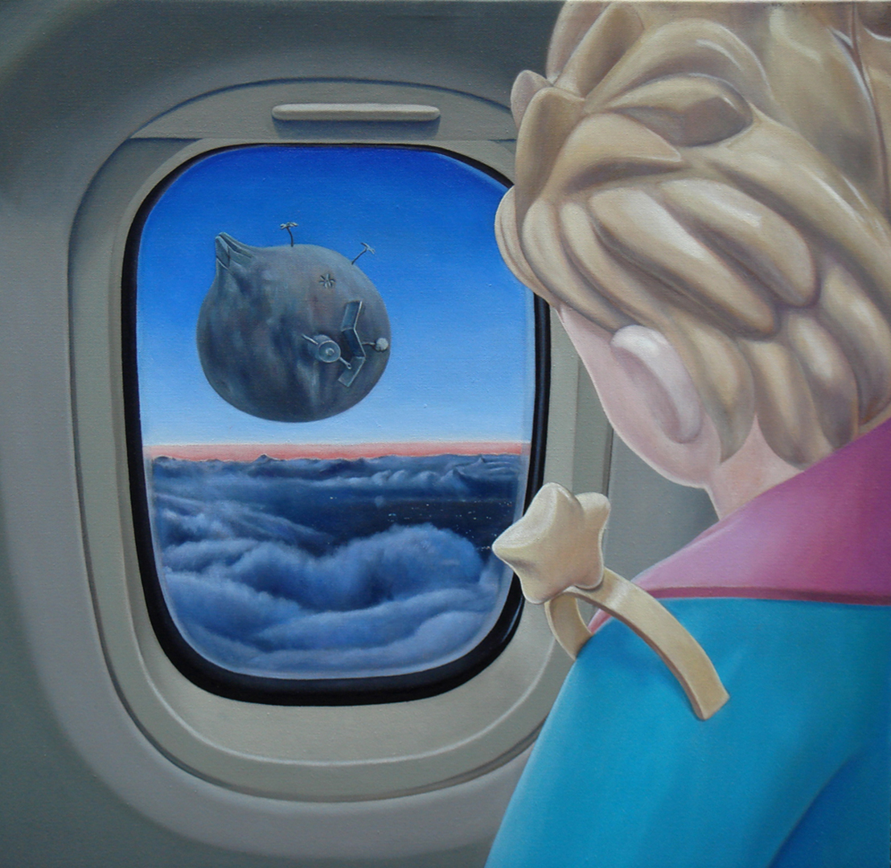

close
葉海地的油畫創作，對於萬物有靈的宇宙觀有豐富而細緻的呈現。藝術家曾遊牧世界各原始部落，學習遠古的薩滿智慧，最後落腳台灣東海岸。海邊的生活看麼平靜卻時刻在變化，自然中俯拾皆是泛靈智慧的提示。藝術家透過繪畫，為海邊變絓莫測的風景進行紀錄，又將對靈性的詮釋傾注其差中
Carousel Fullscreen Template
This is a free Fullscreen Carousel template made with the Bootstrap 4 framework.

Caption for Image 2
This is the caption description text for image 2.

Caption for Image 3
This is the caption description text for image 3.
Caption for Image 4
This is the caption description text for image 4.